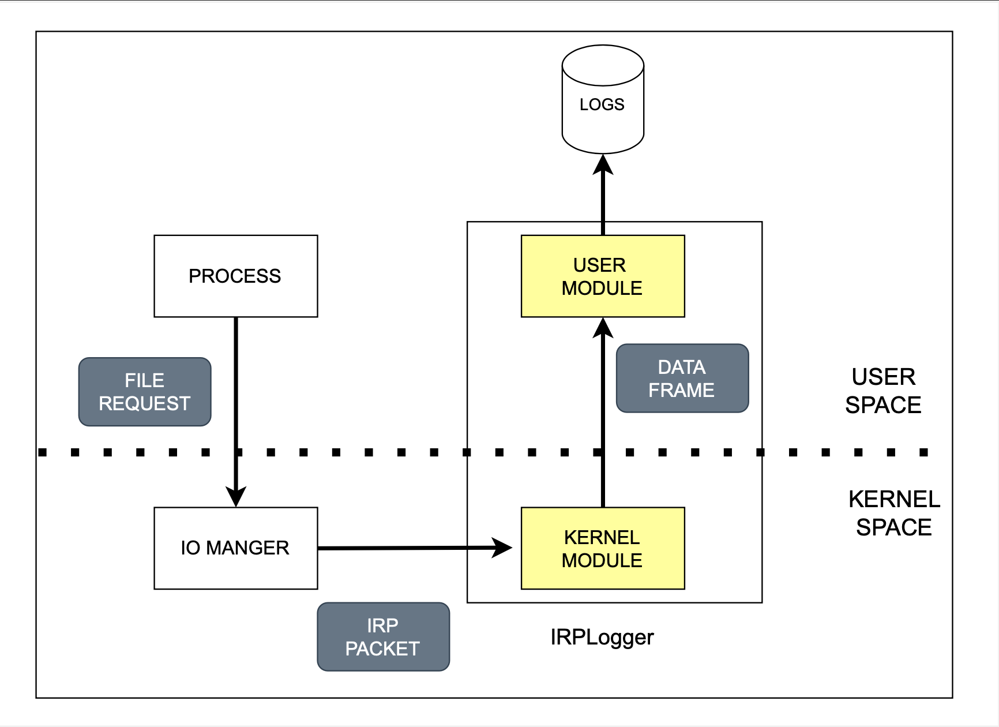

IRPLogger
The IRPLogger is software that extracts relevant features from file operations. It receives details of these operations, parses them, and saves the information to a log file. This page explains which parts of the IRPLogger must be modified to capture additional features or to alter existing ones.
IRPLogger structure
The IRPLogger consists of three components: a kernel module, a user module, and a custom data frame. The kernel (filter) module receives I/O operations, parses the contents, and saves them to a custom data frame. The user module then receives this frame and saves it to a file.

The main steps to add a feature are the following:
- Identify the feature of interest
- Add a rule in the filter module
- Modify the custom frame for storing additional information
- Modify the user module for printing the additional features
To implement the modification it is sufficient to modify only the files related to these operations:
- IRPLogger/filter/IRPLoggerLog.c
- IRPLogger/user/IRPLoggerLog.c
- IRPLogger/inc/IRPLogger.h
inc/IRPLogger.h
The inc/IRPLogger.h file defines a RECORD_DATA structure, which serves as a custom frame for collecting various parameters. To capture additional data, this structure can be extended with new variables. At runtime, the logger creates a new frame and provides a pointer to it for the filter to populate. For example, the major function code is defined as a UCHAR variable named callback_major_id.
filter/IRPLoggerLog.c
The filter/IRPLoggerLog.c use a record_data variable of type RECORD_DATA to save the parameters. For example, to save the major function code, we can do the following:
The dereferencing of data->Iopb->MajorFunction variable is defined in the the IRP packet parsing page.
For an incoming packet, the record_data structure can be modified either before or after the operation, depending on the nature of the operation. The functions log_pre_operation_data and log_post_operation_data access the data before and after the operation, respectively.
Inside these two functions we can define specific filter depending on the IRP packet major function code:
If additional information needs to be extracted, we can proceed as follows:
// 1. Check major function code
if (data->Iopb->MajorFunction == IRP_MJ_SET_INFORMATION)
{
// 2. Check FileInformationClass Value
if (data->Iopb->Parameters.SetFileInformation.FileInformationClass
== FileRenameInformation)
{
// 3. Get pointer to specific structure
PFILE_RENAME_INFORMATION renameInfo;
renameInfo = (PFILE_RENAME_INFORMATION)data->Iopb->Parameters.
SetFileInformation.InfoBuffer;
//...
}
}
The code example perform the following operations:
- Check the major function code.
- Verify the subcase using the
FileInformationClassvariable inside the specific struct. - Obtain a pointer to the operation specific structure.
/user/IRPLoggerLog.c
The user/IRPLoggerLog.c uses a log_on_file function to parse the RECORD_DATA data frame and save it to a file.
For example, for saving the type of operation we can do the following:
In case of specific parameters, we can check the major function code:
if(record_data->callback_major_id == IRP_MJ_SET_INFORMATION)
{
fprintf(file, "InfoClass: %X\t", record_data->x.FileRename.FileInformationClass);
// ...
}
The previous example saves the FileInformationClass value to file to detonate the subcase.